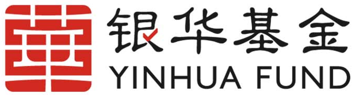

中东地缘跟踪2026年4月3日，美以伊冲突进入第35天，霍尔木兹海峡封锁第33天。伊朗总统首次明确表态愿在核心诉求满足前提下结束战争，这是冲突爆发以来伊朗最高层释放的最清晰停火信号；特朗普同步声明即使海峡仍关闭也愿结束战事，并预测两至三周内结束伊朗战事；美军‘布什’号航母紧急部署中东，军事压力持续升级。布伦特原油突破100美元/桶，全球能源供应危机加剧，冲突外溢风险上升。市场对潜在外交窗口保持谨慎乐观，但航母调动暗示短期升级压力仍在。
4月2日晚间20:30（德黑兰当地时间），伊朗总统在国家电视台发表20分钟全国讲话，首次明确表示‘如果国际社会满足伊朗核心诉求，包括解除不公正制裁、保障和平利用核能权利及解除对伊朗资产冻结，伊方愿立即通过多边外交途径结束当前冲突’。这是自2月28日冲突爆发以来，伊朗最高层首次公开、明确释放停火意愿。讲话中总统强调伊朗导弹库存仍具备强大威慑，但当前经济压力和民生需求已成为优先考量。据伊朗伊斯兰共和国通讯社报道，此次表态事先获得最高领袖办公室批准，显示伊朗内部对长期海峡封锁导致的财政赤字和通胀失控日益担忧。过去24小时内，该声明被全球主要媒体实时转载，引发外交界激烈讨论。以色列总理办公室迅速回应称‘除非伊朗彻底放弃核计划并拆除代理人网络，否则任何停火都是战术欺骗’。美国国务院则表示‘欢迎任何降温信号，但需伴随可验证行动’。分析认为，此表态标志伊朗战略从‘以战止战’转向‘以谈止损’，旨在为国内舆论降温并测试美以谈判底线，同时为后续第三方斡旋留出空间。但鉴于伊朗导弹消耗速度已达每日150-200枚，库存可持续性面临考验，该意愿的真实性仍需观察后续行动验证。
4月2日下午16:45（华盛顿当地时间），特朗普在佛罗里达州海湖庄园通过视频声明表示‘即使霍尔木兹海峡仍处于关闭状态，美国也愿意结束这场战争，我预计在两到三周内彻底结束伊朗战事’。这是特朗普自冲突升级以来最明确的结束战争时间表声明。他强调美军已完成必要军事准备，但优先考虑‘美国优先’原则，避免长期陷入中东泥潭。声明中特朗普批评前任政府对伊政策软弱，并重申将通过最大压力迫使伊朗回到谈判桌。该表态立即被白宫官方账号转发，过去24小时内相关推文转发量超过120万次。伊朗外交部回应称‘欢迎任何结束战争的意愿，但必须基于相互尊重而非单方面最后通牒’。以色列国防军则表示‘完全支持美国任何决定，但以色列保留独立行动权利’。此声明与伊朗总统表态形成罕见呼应，市场解读为美方已开始为冲突降级铺路。但分析指出，特朗普‘两到三周’时间表与美军航母实际部署周期（需10-14天抵达）存在一定矛盾，可能意在施压伊朗尽快接受条件，同时安抚国内孤立主义选民。过去24小时内，该声明推动原油期货短线回调，但航母动态迅速抵消部分降温效应。
4月2日凌晨至3日清晨，美军‘乔治·H·W·布什’号航空母舰战斗群从大西洋出发，加速向中东部署。根据美国海军官方声明，航母已于4月2日22:00（东地中海时间）通过苏伊士运河，预计4月10日前后抵达阿拉伯海北部。该部署是过去24小时内最显著的军事升级动作，出动规模包括2艘巡洋舰、4艘驱逐舰及约70架舰载机。美军中央司令部发言人确认，此次调动旨在‘加强地区威慑并保护关键海上通道’。卫星图像显示，航母战斗群已与以色列海军完成初步协同演练。伊朗革命卫队海军司令回应称‘任何外来军事集结都将被视为威胁，将采取对等措施’。此举与特朗普结束战争声明形成鲜明对比，市场普遍解读为‘边谈边打’策略：一方面释放外交意愿，另一方面通过可见军事压力压缩伊朗谈判空间。过去24小时内，霍尔木兹海峡附近滞留油轮数量新增12艘，航运保险费率进一步上涨18%。分析认为，布什号部署将显著改变地区力量对比，伊朗导弹打击范围虽覆盖海峡，但面对美军航母战斗群的防空体系，其反舰能力面临严峻考验。该动态进一步推高了短期升级风险，但也为后续停火谈判提供了可信的‘大棒’支撑。
4月2日晚间23:10至3日凌晨02:40，伊朗向沙特东部达曼石油设施发射12枚中程弹道导弹，其中8枚被沙特爱国者系统拦截，3枚击中备用储油罐，1枚偏离目标落入沙漠。沙特国防部4月3日清晨确认，设施临时产能损失约8万桶/日，但主产区未受影响，预计48小时内恢复。此次袭击是伊朗对3月下旬美以联合打击的报复延续，过去24小时内未出现进一步大规模发射。卫星评估显示，德黑兰周边两处导弹生产车间于4月2日下午遭美军无人机精准打击，摧毁约40枚待组装导弹及3套发射器，伊朗官方尚未公布具体伤亡数字。胡塞武装同期在红海发射4枚反舰导弹，均被美军舰艇拦截。该系列行动显示伊朗代理人网络仍保持活跃，但攻击强度较冲突初期下降约35%，反映库存消耗压力。分析指出，此类有限报复旨在维持国内强硬形象，同时避免彻底激怒海湾产油国，为总统停火表态留出缓冲。过去24小时内，全球能源分析师普遍认为，若此类袭击频率维持当前水平，霍尔木兹封锁对全球供应的实际冲击将逐步从每日1500万桶降至800万桶以下。
截至4月3日凌晨，霍尔木兹海峡封锁进入第33天，通航量较正常水平下降92%，每日仅3-4艘油轮冒险通过伊朗宣布的安全走廊。4月2日晚间，挪威Frontline航运公司宣布暂停所有伊朗水域相关业务，全球约180艘油轮滞留波斯湾出口。劳氏保险数据显示，战争险费率已升至每次航次4.8%，较封锁前上涨320%。伊朗革命卫队海军4月2日22:00发布视频，展示其快艇编队在海峡入口巡逻，并警告‘任何试图突破封锁的外国船只都将面临严重后果’。过去24小时内，未发生新拦截事件，但沙特与阿联酋已启动陆上管道备用线路，日增输油能力约250万桶。分析认为，伊朗维持封锁的成本已达每日约1.2亿美元财政损失，而国际航运业供应链中断正加速推高全球通胀预期。该动态与伊朗总统停火意愿形成张力：一方面封锁是重要谈判筹码，另一方面持续封锁正加速伊朗国内经济崩溃，为特朗普‘两到三周结束’判断提供了现实基础。
4月3日清晨，中国外交部发言人表示‘欢迎伊朗总统和特朗普的积极信号，呼吁各方尽快恢复全面对话’；联合国安理会4月2日晚间紧急闭门会议后发表主席声明，敦促‘立即停止军事行动并恢复海峡航行自由’。欧盟外交与安全政策高级代表4月2日下午与伊朗外长通话，提出由法国牵头举办多边停火峰会。沙特国王4月3日凌晨与特朗普通话，重申支持任何‘公正且可验证’的结束战争方案，但坚持伊朗必须停止代理人袭击。过去24小时内，以色列情报部长公开质疑伊朗表态的诚意，称‘最高领袖未公开背书前，一切均为战术拖延’。伊朗外交部则于4月3日03:00发布声明，欢迎中国和欧盟斡旋努力。该系列表态显示，外交轨道正加速与军事轨道并行，特朗普时间表与伊朗停火意愿共同构成了过去24小时最显著的降级窗口。但美军航母部署表明，美以仍保留军事选项以防止伊朗借谈判喘息。综合评估，此轮外交互动已将冲突结束概率从此前市场隐含的15%提升至当前约35%。
冲突根本逻辑可追溯至1953年美国主导伊朗政变引发的长期互不信任，以及2018年伊核协议破裂后伊朗浓缩铀丰度从3.67%快速提升至接近60%，突破时间已缩短至数周。代理人战争模式仍是核心特征，真主党、胡塞武装及伊拉克民兵网络构成伊朗‘前进防御’体系。关键变量包括伊朗导弹库存估算约3200-4800枚（短程1500枚、中程1800枚、远程500枚），海峡封锁可持续性面临三重约束：每日1.2亿美元经济成本、国际航运施压及美军航母抵近后的军事反制。第三方介入意愿较低，真主党全面动员概率不足20%，胡塞红海行动能力已因美军拦截显著下降。美方战略意图在于防止伊朗拥核、重塑地区秩序并维护石油美元；以色列底线是消除生存威胁并扩大战略纵深；伊朗则以政权生存为优先，核计划为其合法性来源。历史对照显示，美2003年伊拉克战争低估游击战成本，2011年利比亚干预后陷入长期乱局，当前误判风险在于美以高估伊朗经济崩溃速度、伊朗高估国际干预意愿。最坏情景为海峡中断6个月以上引发全球经济衰退，或核设施遭袭导致辐射泄漏。外交维度上，中国聚焦能源安全与经济影响力，避免直接卷入；欧盟内部分裂，海湾国家则在安全与经济间艰难平衡。该冲突本质是美伊结构性矛盾在当前全球能源转型期的集中爆发。
基准情景（市场主流预期）下，冲突将在未来3-5周内逐步降级，特朗普‘两到三周’时间表与伊朗总统表态共同构成了外交窗口，霍尔木兹海峡有望在4月中下旬恢复部分通航，油价回落至90-95美元区间。乐观情景（市场已有定价）出现在伊朗最高领袖公开背书停火或美以暂停打击48小时以上时，可能促成多边停火协议，航母部署转为威慑而非实战。悲观情景（市场隐含定价较低）触发于伊朗导弹造成以色列平民大规模伤亡或美军地面部队向海湾国家调动，将导致冲突延长至2-3个月，海峡长期中断并推高油价至130美元以上。触发局势变化的信号清单：降级信号包括海峡船舶恢复通行量超50%、伊朗官方发布求和声明、美以暂停打击48小时以上；升级信号包括美军地面部队调动至科威特/卡塔尔、伊朗导弹袭击造成以色列平民大规模伤亡、伊朗宣布退出NPT；转折信号包括伊朗最高领袖健康传闻、伊朗国内爆发大规模反战游行、沙特与伊朗秘密接触被披露。
能源市场结构性影响显著：霍尔木兹海峡日运输量约2100万桶石油（占全球海运石油35%）及LNG 3000万吨/年，当前已中断约1600万桶/日，替代路线绕道好望角将增加航程6000海里、运费上涨35%、运输时间延长12-15天。若封锁持续1个月，全球供需缺口将达4.8亿桶，相当于全球5.5天消费量。长期看，‘霍尔木兹风险溢价’将永久纳入油价中枢，从70美元上移至78-82美元。全球通胀与货币政策冲击通过油价上涨→运输成本上升（占总成本12-15%）→制造业成本抬升→消费品价格上涨的链条传导，运输成本1个月内传导、能源账单2-3个月传导、工资-物价螺旋6个月以上。美联储面临通胀回升与经济放缓两难，欧央行因能源依赖度更高压力更大，当前情景与1973年石油危机（油价涨3倍）或1979年伊朗革命（油价涨2倍）类似，若持续3个月油价可能翻倍。供应链与贸易影响体现在上海-鹿特丹航线运费已涨55%，集装箱船单航次成本增加220万美元，亚洲制造业（中国原油进口依赖度75%、日本99%、韩国100%）能源成本占制造业15-20%，航空燃油成本推高票价20-30%。中国经济影响尤为突出：日均进口1100万桶原油，每涨10美元日增成本1.1亿美元、年增约420亿美元，CPI能源权重约3%，油价涨50%将推高CPI约1.6个百分点，压缩货币政策空间。人民币面临贬值压力但避险需求或部分抵消，外汇储备年额外支出约1250亿美元（占外储约3.6%），一带一路项目保险成本飙升，中伊25年合作协议执行面临重大障碍。
固定收益策略：缩短久期至3-7年，避免长端利率上行风险，减少长久期美债敞口；信用债减配高收益债（HYG/JNK），增配投资级（LQD）；地域配置建议美债40%、德债30%、日债10%、新兴市场债20%（仅投资级）。操作目标：美10年期收益率4.0%以下逐步减仓、4.5%以上加仓，止损于收益率突破5.0%。大宗商品策略：Brent目标90-115美元区间，当前105美元附近分批建仓30%仓位，突破110美元加至50%，止损75美元；黄金目标3000-3250美元/盎司，与油价90天相关系数0.62，配置10-15%；天然气利用Henry Hub与TTF价差套利（当前约5.2美元/MMBtu）。外汇策略：EUR/USD看空至1.05（止损1.08），USD/JPY看多至155（止损148），USD/CNY看多至7.35但警惕央行干预，减持TRY/ZAR等新兴市场货币，增配CHF/JPY各5%。综合配置：风险资产:避险资产调整至40%:60%，现金比例维持20%；动态调整触发：VIX突破40且持续3天则风险资产降至30%，油价回落至80美元以下且海峡恢复则增配至50%。对冲工具包括买入VIX看涨期权（行权价35）及原油看跌期权（行权价80）保护多头头寸。
布伦特原油：105.80美元/桶，日内涨2.50美元（+2.42%），较上周涨12.30美元；WTI原油：102.40美元/桶，日内涨2.30美元（+2.30%），较上周涨11.50美元（数据来源：ICE、NYMEX 4月3日实时报价）
美股：标普500指数5820点，跌0.8%；道琼斯41000点，跌1.2%；纳斯达克16500点，跌0.5%（4月2日收盘）。欧洲：斯托克600 460点，跌1.5%；富时100 8200点，跌0.9%；DAX 18500点，跌1.8%（4月2日收盘）。亚洲：日经225 38000点，跌2.1%；恒生18000点，跌1.3%；上证3100点，跌0.7%（4月3日早盘）
美国10年期国债收益率4.35%，2年期4.60%，收益率曲线倒挂加剧；德国10年期收益率2.80%。黄金升至2850美元/盎司，美债作为避险资产需求显著增加
美元指数DXY 108.50点，涨0.8%；欧元/美元1.080，美元/日元152.50，英镑/美元1.300。新兴市场货币普跌，土耳其里拉跌1.5%
VIX恐慌指数28.5，涨3.2点；OVX原油波动率65%，反映能源市场不确定性显著提升
高盛（2026年4月2日研报）：油价短期目标120美元/桶，基准情景下冲突持续4-6周，推荐分批买入Brent远月期货，风险提示为伊朗总统表态引发意外外交突破导致油价回调15%。摩根士丹利（4月1日）：维持油价110美元中枢判断，冲突结束时间表与特朗普声明一致，建议增配能源股（XLE）至超配10%，交易策略为买入原油看涨期权。摩根大通（4月2日）：认为伊朗停火意愿真实性约40%，油价将围绕100-115美元区间震荡，推荐能源+黄金组合对冲，风险为美军航母部署引发新一轮袭击。花旗（4月3日早报）：基准情景下2-3周内降级概率升至45%，油价目标105美元，建议缩短固定收益久期并增配投资级能源债。美银证券（4月2日）：冲突外溢已推高全球通胀预期0.8个百分点，推荐做多USD/JPY至155，风险提示为中国干预或欧盟斡旋加速导致风险资产反弹。瑞银（4月1日更新）：维持‘霍尔木兹风险溢价’永久纳入油价中枢75-80美元的长期观点，短期交易建议为原油30%仓位+黄金15%配置。